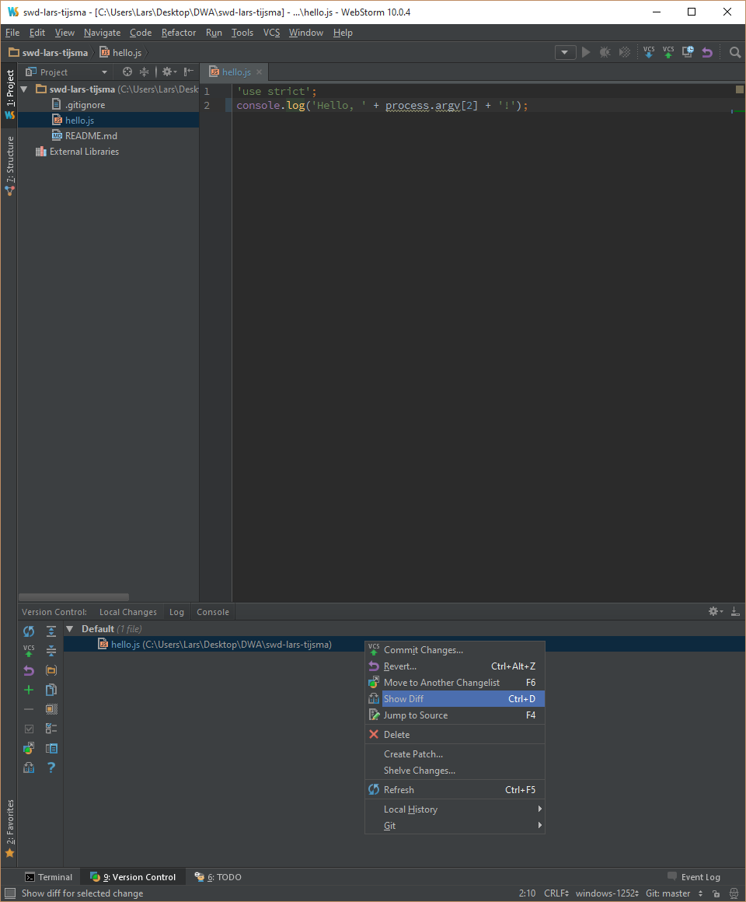
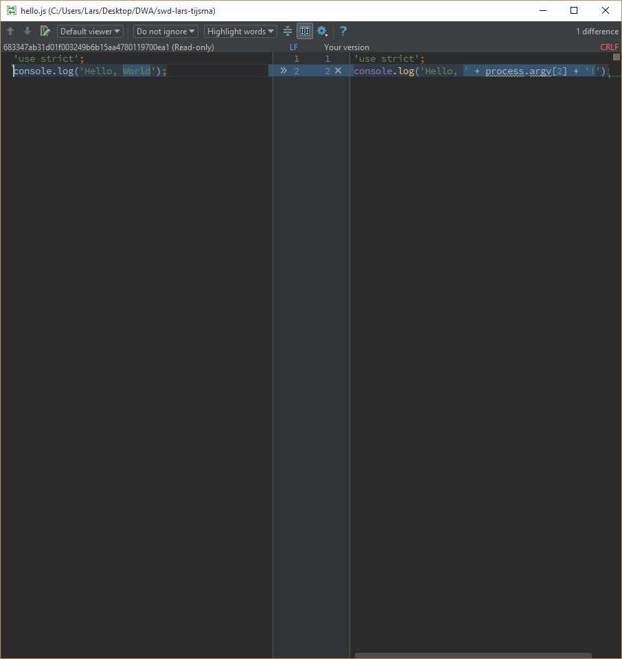

lab 7 Inspecting the changes
Goals
- Learn how to inspect the changes since the last commit
Inspect the diff 01
Execute:
Right-click on hello.js in the Version Control window and select "Show Diff"
Output:
You should see:
If you're not happy with certain changes, you can click the '>>' or the 'x'. We won't do that now.